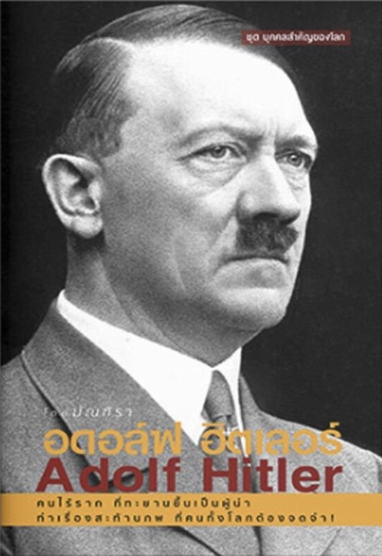

<html lang="en"></html>

<head>
	<meta charset="utf-8">
	<meta name="viewport" content="width=device-width, initial-scale=1">
	<title>แนะนำหนังสือ “อดอล์ฟ ฮิตเลอร์ (Adolf Hitler)”</title>
	<link href="https://cdn.jsdelivr.net/npm/bootstrap@5.3.0-alpha3/dist/css/bootstrap.min.css" rel="stylesheet" crossorigin="anonymous">

	
	<meta name="keywords" content="อดอล์ฟ ฮิตเลอร์(Adolf Hitler),พรรคนาซี(Nazi Party),สงครามโลกครั้งที่สอง(World War II),การโฆษณาชวนเชื่อ(Propaganda),ประวัติศาสตร์การเมือง(Political History) ">
	<meta name="description" content="หนังสือ “อดอล์ฟ ฮิตเลอร์ (Adolf Hitler)” เป็นหนังสือที่สำรวจชีวิตและอุดมการณ์ของหนึ่งในบุคคลที่มีอิทธิพลมากที่สุดในประวัติศาสตร์โลก หนังสือเล่มนี้นำเสนอข้อมูลเชิงลึกเกี่ยวกับการขึ้นสู่อำนาจของฮิตเลอร์ การดำเนินนโยบายทางการเมือง และผลกระทบที่เกิดขึ้นจากการกระทำของเขา ">


	<link rel="preconnect" href="https://fonts.googleapis.com">
	<link rel="preconnect" href="https://fonts.gstatic.com" crossorigin>
	<link href="https://fonts.googleapis.com/css2?family=Itim&family=Noto+Serif+Thai:wght@100..900&family=Sarabun:ital,wght@0,100;0,200;0,300;0,400;0,500;0,600;0,700;0,800;1,100;1,200;1,300;1,400;1,500;1,600;1,700;1,800&display=swap" rel="stylesheet">

	<link rel="stylesheet" href="css/style.css">

</head>
<header>
	<!-- Header section -->
	<div class="row bg-body-tertiary sticky-top">
	<div class=" header">
		<div class="logo">
			REALLLFERN
			<small>ชนนิกาน</small>
		</div>
	</div>

	<!-- Navigation bar -->
	<section class="nav">
		<ul class="menu">
			<li><a href="#">Home</a></li>
			<li><a href="#">Books</a></li>
			<li><a href="#">Bazaar</a></li>
			<li><a href="#">Promotion</a></li>
			<li><a href="#">Story</a></li>
			<li><a href="#">About Us</a></li>
		</ul>
		<div class="icons">
			<a href="#">สมัครสมาชิก</a>
			<a href="#">เข้าสู่ระบบ</a>
			<a href="#">ติดต่อเรา</a>
			<a href="#"></a>
			<a href="#"></a>
			<a href="#"></a>
			<a href="#"></a>
			<a href="#"></a>

		</div>
		<div class="search-cart">
			<a href="#">&#128269;</a> <!-- Search icon -->
			<a href="#">&#128722;</a> <!-- Cart icon -->
		</div>
	</section>
</header>


<body>
	<div class="container"  style="background-color: #f5ebe0;">

<!-- รูปหนังสือที่แนะนำ -->
<div class="row my-4">
    <div class="col-md-6 px-0" id="hitler">
        
    </div>

<!-- ข้อความแนะนำ -->

<div class="col-md-6 px-0">
     <br>
	 <br>
		<h2>
            <strong>อดอล์ฟ ฮิตเลอร์</strong>
        </h2>
		<h3> 
			<strong>(Adolf Hitler)</strong>
        </h3>
		
        <p class="fs-6">
            หนังสือ “อดอล์ฟ ฮิตเลอร์ (Adolf Hitler)” เป็นหนังสือที่สำรวจชีวิตและอุดมการณ์ของหนึ่งในบุคคลที่มีอิทธิพลมากที่สุดในประวัติศาสตร์โลก หนังสือเล่มนี้นำเสนอข้อมูลเชิงลึกเกี่ยวกับการขึ้นสู่อำนาจของฮิตเลอร์ การดำเนินนโยบายทางการเมือง และผลกระทบที่เกิดขึ้นจากการกระทำของเขา
		</p>
		<p class="fs-6">
			หนังสือเล่มนี้ครอบคลุมช่วงชีวิตของฮิตเลอร์ตั้งแต่วัยเด็กจนถึงการเป็นผู้นำของพรรคนาซีและการก่อสงครามโลกครั้งที่สอง นอกจากนี้ยังมีการวิเคราะห์เชิงลึกเกี่ยวกับอุดมการณ์นาซีและการโฆษณาชวนเชื่อที่ฮิตเลอร์ใช้ในการควบคุมประชาชน
		</p>
		<br>
<!-- บรรยายหนังสือ -->
        <h4>
            <strong>เรื่องย่อ</strong>
        </h4>
        <p class="fs-6">
            อดอล์ฟ ฮิตเลอร์ ผู้สร้างประวัติศาสตร์ที่สั่นสะเทือนไปทั้งโลกความโหดเหี้ยม กระหายอำนาจ ปรารถนาสงครามของฮิตเลอร์เกิดขึ้นจากอะไร อะไร ทำให้มนุษย์ผู้นี้มีจิตใจโหดเหี้ยม ทารุณต่อเพื่อนมนุษย์ได้ขนาดนั้น จากเด็กธรรมดาที่ไม่มีต้นทุนทางสังคมหรือต้นทุนทางครอบครัวเลยทำไมจึงสามารถผลักดันตัวเองขึ้นมาเป็นผู้นำเยอรมนีได้ และสามารถก่อสงครามที่สะท้านสะเทือนโลกได้ขนาดนี้แม้สงครามโลกครั้งที่สองจะจบสิ้นไปนานนับศตวรรษแล้วแต่เรื่องราวของสงครามครั้งนั้น ยังอยู่ในความทรงจำยังถูกกล่าวขานถึงเสมือนหนึ่งเพิ่งจบสิ้น และเมื่อกล่าวขานถึงสงครามโลกครั้งที่สองก็ต้องกล่าวถึงอดอล์ฟ ฮิตเลอร์ควบคู่กันไป เพราะเขาคือผู้จุดฉนวนสงครามโลกในครั้งนี้!และนี่คือเรื่องราวชีวิตอันสะท้านภพของผู้นำผู้นี้!
        </p>

		<p class="fs-5"> 
			<strong>คะแนนหนังสือ 8.00 </strong>
		</p>

		<table class="fs-6">
			<tr>
				<td>ผู้แต่ง</td>
				<td>มัณฑิรา</td>
			</tr>
	
			<tr>
				<td>หมวดหมู่</td>
				<td>ประวัติศาสตร์</td>
			</tr>
	
			<tr>
				<td>ISBN</td>
				<td> 9786163880154 </td>
			</tr>
	
			<tr>
				<td>จำนวนหน้า</td>
				<td>208 หน้า</td>
			</tr>
		</table>

    </div>
</div>


    

</div>
  </body>
    <script src="https://cdn.jsdelivr.net/npm/bootstrap@5.3.3/dist/js/bootstrap.bundle.min.js" integrity="sha384-YvpcrYf0tY3lHB60NNkmXc5s9fDVZLESaAA55NDzOxhy9GkcIdslK1eN7N6jIeHz" crossorigin="anonymous"></script>
  </body>
</html>